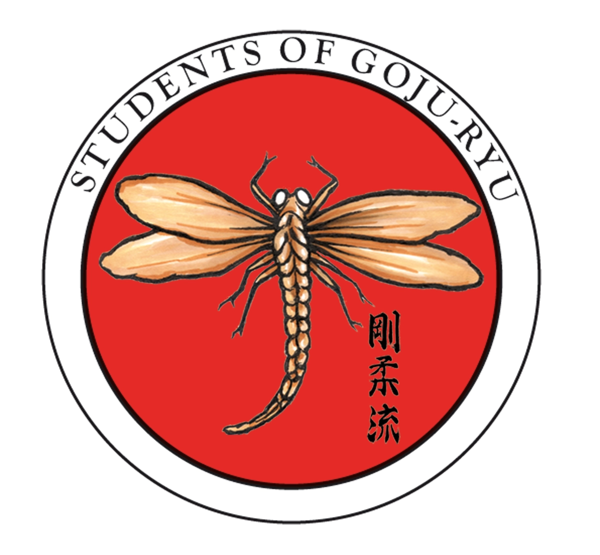

Välkommen till Students of Goju Ryu

Träning som passar alla - både för barn och vuxna
Vi utövar kampkonst med historiskt ursprung med självförsvar och livsstil som grund. I dagens stressiga tillvaro erbjuder vår utbildning österländska redskap att hantera din vardag. Vår karate är unik i många avseenden och stilen representerar ett balanserat system av fysisk träning och personlig utveckling. Vår filosofi handlar inte om att finna sig själv, utan att skapa den du skulle vilja vara.
Goju Ryu har en nära koppling till flera av de tidiga kinesiska kampformerna. Det eftertraktade svarta bältet kan ta längre tid att erövra men i gengäld är innehållet så mycket större. Det som är centralt för oss är att den kunskap du får är något du har användning för och kan vara stolt över. Vi hoppas att detta är viktigt även för dig.
Om vårt emblem

Trollsländen - en symbol för skönhet och inre styrka
I Japan har trollsländan sedan urminnes tider varit ett djur som representerat skönhet, men också en symbol för inre styrka. Idag är det japanska ordet för trollslända Tonbo, men det gamla namnet var Kashimushi, som betyder segerinsekt. Kachi (eller grundformen katsu) betyder "seger". och Muchi = insekt. Anledningen till namnet var att en trollslända aldrig retirerar i kamp, utan bara flyger framåt. Detta var en kvalitet samurajerna uppskattade så mycket att kashimuchi blev en vanlig prydnad på familjevapen, svärd och textilier. Trollsländan var också en symbol för framgång, lycka, styrka och mod.
För oss är trollsländan den fulländade symbolen för våra värderingar och ett sätt att hedra det japanska ursprunget. Den röda bakgrunden representerar den uppgående solen, symbolen för Japan. Trollsländans bräckliga utseende representerar vårt yttre, som att visa tålamod, ödmjukhet och vänlighet. Under ytan döljer sig den inre styrka som gör det möjligt att leva upp till dessa ideal.
Det finns många gamla sagor om trollsländor i Japan, och ön har ibland kallats Akitsu shima "Trollsländeön". (Akitsu är ett ännu äldre namn för trollslända). En av de gamla legenderna berättar om en kejsare som blev biten av en broms. Han hade själv ingen möjlighet att döda förövaren, men strax efteråt åt en trollslända upp bromsen och återupprättade genom den handlingen kejsarens ära.
En annan historia går tillbaka till den första kejsaren, Jimmu Tenno som tittade ner från toppen av ett berg i Yamoto och tyckte hans land såg ut som två förenade trollsländor. Båda dessa legender finns i Nihonshoki (Japans Krönika, sammanställd 720 e.Kr.), historien om det gamla Japan.
Trollsländor förekommer också i japansk mytologi. "Shoryo Tombo" är de dödas trollslända som har till uppgift att bära familjens förfäders andar under festivalen i Bon.
Varför träna med oss
Karate – mer än bara träning
Goju Ryu Karate är en traditionell kampkonst från Okinawa som kombinerar slag, sparkar, självförsvar och personlig utveckling. Träningen stärker både kropp och sinne – i en respektfull och välkomnande miljö.
- Förbättra styrka, kondition och rörlighet
- Utveckla fokus, disciplin och självförtroende
- Lär dig effektivt självförsvar
- Träna i en positiv gemenskap
- Passar både nybörjare och erfarna
Du behöver inga förkunskaper för att börja – kom precis som du är. Träningen anpassas efter din nivå och många uppskattar möjligheten att träna tillsammans med familj och vänner.
Läs mer om vår träning